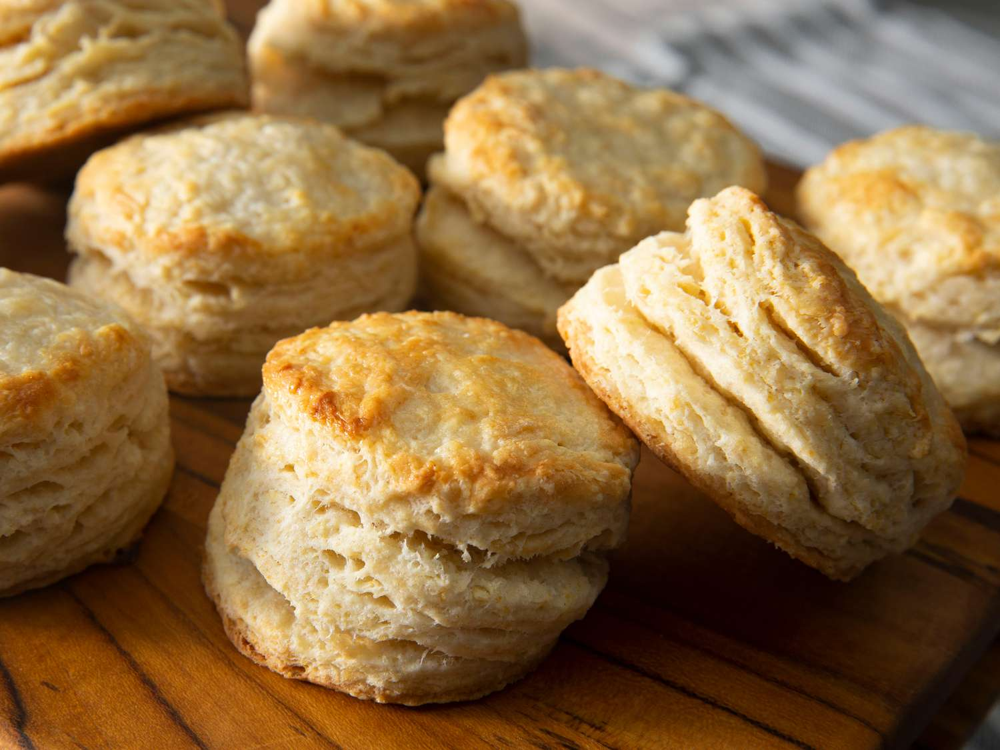

Biscuits

Description
This recipe will help you make delicious biscuits that certainly
will
not come out of the oven underbaked -
regardless of what Sidney may say!
However, make sure the follow the recipe exactly or you may have to
start again from scratch!
Ingredients
- 2 cups of flour (250g)
- 1 tablespoon of sugar
- 1 tablespoon of baking powder
- 1 teaspoon of salt
-
6 tablespoons of vegan butter (frozen or chilled in the freezer
for at least 30 min)
- 3/4 cup of whole milk
Steps
-
Preheat oven to 475F. Prepare a baking sheet with parchment
paper. Grab your biscuit cutting tool of choice.
-
Combine flour, sugar, baking powder, and salt in a large bowl.
- Using a cheese grater, grate in the cold butter.
-
Mix together with a wooden spoon until the texture is crumblike.
-
Add the milk and mix together until the dough can mostly form a
ball.
-
Put mixture on floured surface and, without overworking, flatten
to about 1 inch and fold onto itself. Repeat 5-6 times.
-
Flatten a final time to 1 inch and cut out six biscuits,
recombining if necessary.
- Bake for 15 minutes until golden brown on top.
- Eat!